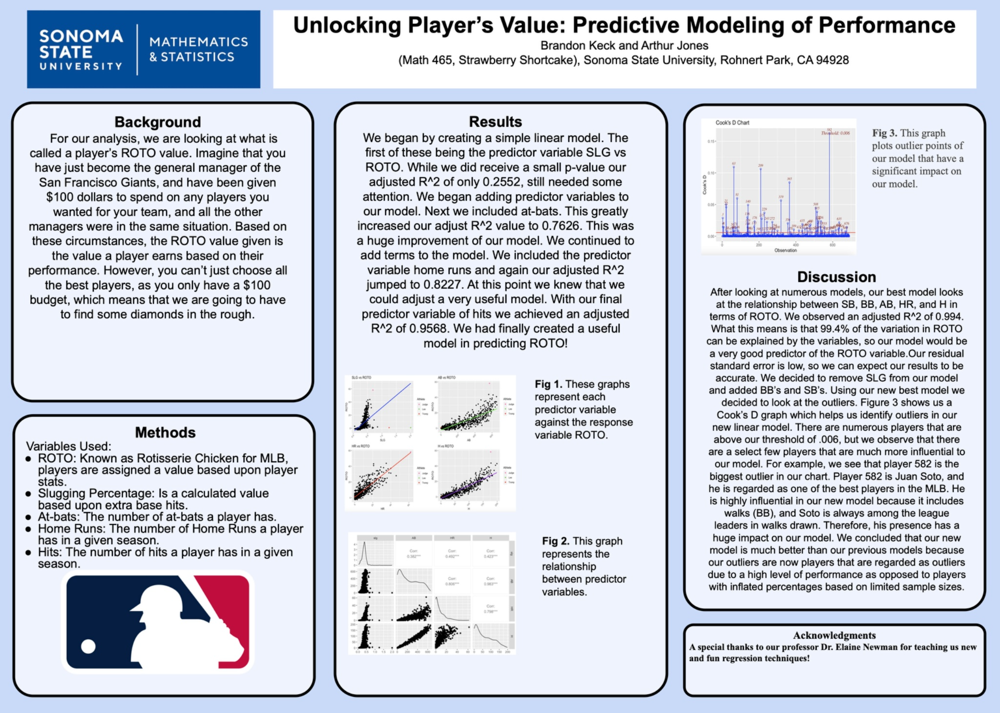
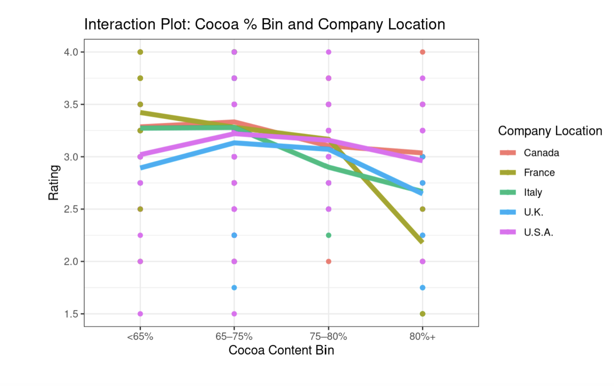

Data & Analytics Projects
A selection of academic, professional, and personal projects spanning R, Python, and Tableau.
Click any card to view the code, dashboard, or full write-up.
Predicting 2022 MLB ROTO Value
- Modeled fantasy baseball (ROTO) value for hitters using 2022 MLB data and performance metrics such as SLG, AB, HR, H, BB, and SB.
- Fit multiple linear regression models in R and compared goodness-of-fit using AIC, adjusted R², and residual diagnostics.
- Explored interactions and multicollinearity, applying model selection techniques to find a parsimonious specification.
- Built Tableau visualizations (scatterplots, residual plots, and player comparison views) to communicate model insights.
2025 — R, Tableau

Chocolate Bar Ratings: ANOVA & Effect of Cocoa %
- Analyzed the “Flavors of Cacao” dataset to understand how company location and cocoa percentage impact expert ratings.
- Used factorial ANOVA with Type II sums of squares to handle unbalanced data and interpret main effects and interactions.
- Performed model diagnostics (residual plots, normality checks, variance homogeneity) and applied transformations where needed.
- Summarized results in publication-style tables and plots using
ggplot2 and reported practical implications for chocolate makers.
2025 — R, ANOVA
